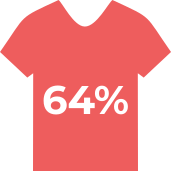

Fast fashion spreads a message that if you wear clothes that are out of season, it means you're our of style.
"that shirt
is so last
month"
"eww"
"when was
the last time
you bought
something
new?"
This encourages people to shop at fast fashion stores to buy the most up to date clothes, and to discard their older items.
20,000L of Water
is used to create one pair of jeans

jeans are sold in the US per year
thats

litres of water per year!
synthetic fabrics & chemicals in cheap dyes

of all fabrics are made of plastic
Just washing a batch of clothes can create 17 million microfibres
Microfibres can be found in the air, rivers, drinking water, and the ocean
Cheaper price/quality dyes contain many different harsh toxins